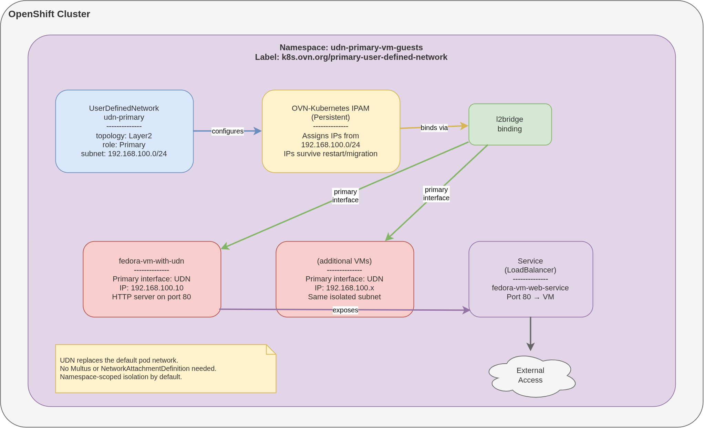

UDN を使用した Layer2 プライマリネットワークの構成
概要
このチュートリアルでは、OpenShift Virtualization で User Defined Networks (UDN) を使用した Layer2 トポロジーのプライマリネットワークを作成する方法を説明します。クラスターのデフォルトネットワークを使用する代わりに、UDN を使用するとカスタム IP 範囲を定義し、特定の namespace 内のアプリケーションに対して完全なネットワーク分離を提供できます。このアプローチは、アプリケーションが IP アドレス割り当てを直接制御する必要がある場合や、独自のネットワーク要件がある場合に最適です。ネットワーク接続定義 (Network Attachment Definition) を追加することなく、5 つの簡単なステップでセットアップ全体が完了します。
検証済みバージョン:
OpenShift 4.19, 4.20, 4.21
前提条件
-
OpenShift Virtualization Operator がインストールされた OpenShift 4.19 以降のクラスター
-
OVN-Kubernetes ネットワークプラグイン (OpenShift のデフォルト)
-
namespace および UserDefinedNetwork リソースを作成するためのクラスター管理者権限
-
インストール済みの CLI ツール:
oc、virtctl
ステップ 1: UDN を有効にした namespace の作成
UDN プライマリネットワークラベルが付いた namespace を作成し、User Defined Network 機能を有効にします。特殊なラベル k8s.ovn.org/primary-user-defined-network を付与することで、OpenShift に対してこの namespace がクラスターのデフォルトではなくカスタムプライマリネットワークを使用することを伝えます。
| namespace は、ワークロードをデプロイする前に作成およびラベル付けを行う必要があり、作成後の変更はできません。 |
oc apply -f - <<EOF
apiVersion: v1
kind: Namespace
metadata:
name: udn-primary-vm-guests
labels:
k8s.ovn.org/primary-user-defined-network: ""
EOFステップ 2: UserDefinedNetwork リソースの構成
Layer2 トポロジーとカスタムサブネット構成を使用して、Primary UDN を定義します。このリソースは、IP 範囲、IPAM ライフサイクル、プライマリロールの指定といったネットワーク特性を定義し、該当する namespace 内の Pod に対するデフォルトのクラスターネットワーク設定を上書きします。
oc apply -f - <<EOF
apiVersion: k8s.ovn.org/v1
kind: UserDefinedNetwork
metadata:
name: udn-primary
namespace: udn-primary-vm-guests
spec:
topology: Layer2
layer2:
role: Primary
subnets:
- "192.168.100.0/24"
ipam:
lifecycle: Persistent
EOFステップ 3: Primary UDN を使用したワークロードのデプロイ
Primary UDN 構成を利用し、接続テスト用に単純な Python HTTP サーバーを実行する仮想マシンを作成します。ワークロードは、UDN の IPAM を介して 192.168.100.0/24 サブネットから自動的に IP アドレスを受け取り、UDN をそのプライマリネットワークインターフェースとして使用します。
| この例の cloud-init パスワードはデモ目的のみのものです。本番環境では、必ず強力で一意なパスワードまたは SSH 鍵認証を使用してください。 |
oc apply -f - <<EOF
apiVersion: kubevirt.io/v1
kind: VirtualMachine
metadata:
name: fedora-vm-with-udn
namespace: udn-primary-vm-guests
labels:
app: fedora-web-vm
network-type: udn-primary
spec:
runStrategy: Always
dataVolumeTemplates:
- metadata:
name: fedora-udn-volume
spec:
pvc:
accessModes:
- ReadWriteOnce
resources:
requests:
storage: 33Gi
sourceRef:
kind: DataSource
name: fedora
namespace: openshift-virtualization-os-images
template:
metadata:
labels:
app: fedora-web-vm
spec:
domain:
devices:
disks:
- name: datavolumedisk
disk:
bus: virtio
- name: cloudinitdisk
disk:
bus: virtio
interfaces:
- name: default
binding:
name: l2bridge
resources:
requests:
memory: 2Gi
cpu: 1
networks:
- name: default
pod: {}
volumes:
- name: datavolumedisk
dataVolume:
name: fedora-udn-volume
- name: cloudinitdisk
cloudInitNoCloud:
userData: |
#cloud-config
write_files:
- path: /etc/resolv.conf
content: |
nameserver 172.30.0.10 # cluster DNS
search udn-primary-vm-guests.svc.cluster.local svc.cluster.local
options ndots:5
user: fedora
password: fedora
chpasswd: { expire: False }
packages:
- python3
runcmd:
- echo "<h1>Welcome to OpenShift Virtualization !!!</h1>" > /root/index.html
- cd /root && nohup python3 -m http.server 80 > /dev/null 2>&1 &
EOFステップ 4: VM をサービスとして公開
Kubernetes サービスを作成し、LoadBalancer を使用して VM の Python HTTP サーバーを公開します。
| AWS などのクラウドサービスでは、この構成に対してロードバランサーが自動的にデプロイされます。ベアメタル環境へのデプロイでは、ロードバランサーとして MetalLB の利用を検討してください。 |
oc apply -f - <<EOF
apiVersion: v1
kind: Service
metadata:
name: fedora-vm-web-service
namespace: udn-primary-vm-guests
labels:
app: fedora-web-vm
spec:
selector:
app: fedora-web-vm
ports:
- name: http
port: 80
targetPort: 80
protocol: TCP
type: LoadBalancer
EOFステップ 5: サービスの可用性の確認
このテストは、ロードバランサーを自動的にデプロイし、外部名を作成するベアメタル型インスタンスを使用した AWS ベースのクラスターで実行されました。外部サービス IP に名前が表示されます:
oc get svc出力例:
NAME TYPE CLUSTER-IP EXTERNAL-IP PORT(S) AGE
fedora-vm-web-service LoadBalancer 172.30.72.140 aa32981df19ad4959ae9a82fb9990db9-1996929606.ca-central-1.elb.amazonaws.com 80:32291/TCP 45mcurl を使用してサービスをテストします:
curl aa32981df19ad4959ae9a82fb9990db9-1996929606.ca-central-1.elb.amazonaws.com想定される出力:
<h1>Welcome to OpenShift Virtualization !!!</h1>ネットワークトポロジー
次の図は、UDN プライマリネットワークがカスタム IP アドレス指定によって namespace スコープのネットワーク分離をどのように提供するかを示しています。デフォルト pod ネットワークと並行してインターフェースを追加するセカンダリーネットワークとは異なり、UDN プライマリネットワークは namespace 内のすべてのワークロードに対してデフォルト pod ネットワークを完全に置き換えます。

Layer2 トポロジーと role: Primary を備えた UserDefinedNetwork リソースは、ラベル付けされた namespace 用のカスタムサブネット (192.168.100.0/24) を管理するように OVN-Kubernetes を設定します。OVN-Kubernetes IPAM は、Persistent ライフサイクルでこのサブネットからアドレスを割り当てます。これは、再起動や移行をまたいでも VM が IP を保持することを意味します。各 VM のプライマリインターフェースは l2bridge バインディングを通じて UDN に直接接続され、Multus プラグインや NetworkAttachmentDefinition は不要です。外部アクセスは、UDN サブネット上の VM にトラフィックをルーティングする LoadBalancer などの標準 Kubernetes Service を介して提供されます。
ワークロードがデプロイされる前に、namespace に k8s.ovn.org/primary-user-defined-network のラベルを付ける必要があります。このラベルは、namespace 内で pod または VM が実行された後に追加または削除することはできません。
|
ビジネスユースケース
UDN プライマリネットワークは、namespace レベルでカスタム IP アドレス指定による完全なネットワーク分離を必要とするワークロードに最適です。
| ユースケース | 説明 |
|---|---|
マルチテナント SaaS プラットフォーム |
各テナントは、分離されたサブネットを持つ専用の namespace を取得します。あるテナントの namespace 内の VM は別のテナントの namespace 内の VM に到達できないため、物理的なネットワークセグメンテーションを行わずにネットワークレベルのテナント分離が提供されます。 |
開発およびテスト環境 |
チームはカスタム IP 範囲 (例: 開発用に 10.0.1.0/24、ステージング用に 10.0.2.0/24) を持つ namespace を取得できるため、開発者は他のチームやクラスターのデフォルトネットワークと競合することなく、本番環境を模倣したIPアドレス割り当てスキームを定義できます。 |
クラスター管理の IP 永続性 |
再起動やライブマイグレーションをまたいでも安定した IP アドレスを必要とする VM。 |
セカンダリーネットワークとの比較 |
ワークロードがデフォルト pod ネットワークをまったく使用すべきではなく、namespace レベルの分離が必要な場合は、UDN プライマリネットワークを選択します。VM が専用のレプリケーションやハートビートトラフィックなど、デフォルト pod ネットワークと並行して追加のプライベートネットワークを必要とする場合は、Layer 2 セカンダリーネットワークを選択します。 |
まとめ
このチュートリアルでは、以下の内容を学習しました:
-
k8s.ovn.org/primary-user-defined-networkラベルを使用して UDN が有効な namespace を作成する方法 -
Layer2 トポロジーとカスタムサブネット構成で
UserDefinedNetworkリソースを定義する方法 -
永続的な IPAM を備えた、UDN をプライマリネットワークとして使用する VM をデプロイする方法
-
UDN プライマリネットワーク上で実行されている VM を LoadBalancer サービス経由で公開する方法
-
UDN プライマリネットワークがカスタム IP アドレス割り当てによって完全なネットワーク分離を提供する方法